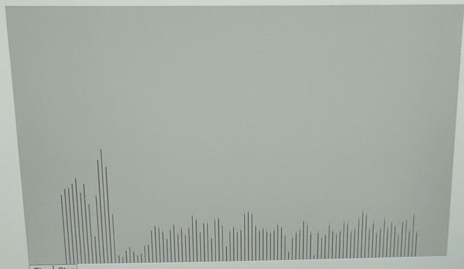

Activity: try it yourself
In this activity, let's try different grips to play low, middle, and high pitch sound using spectrum analyzer. Spectrum analyzer is a tool that you can visually see the pitch of the sound. The y-axis is volume and the x-axis is pitch (frequency in Hz), with lower tones on the left (220Hz) and higher tones on the right (2200Hz).
Procedure
- Allow microphone access if asked.
- Click "Play" button.
- Try different grips to play low, middle, and high pitch sound.
Examples
You can see: (1) the peak in lower frequency (left side) for low pitch, (2) no peaks but flat for middle pitch, and (3) the peak in higer frequenvy (right side) for high pitch.

1) Low pitch

2) Mid pitch

3) Hich pitch
Spectrum Analyzer
Showing the range between 220Hz (left) to 2200Hz (right).